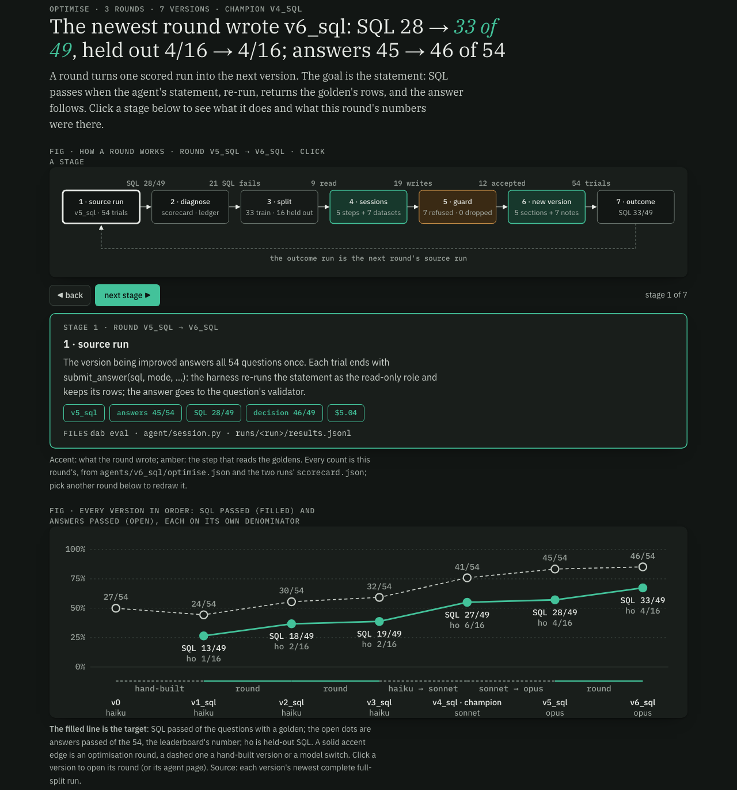
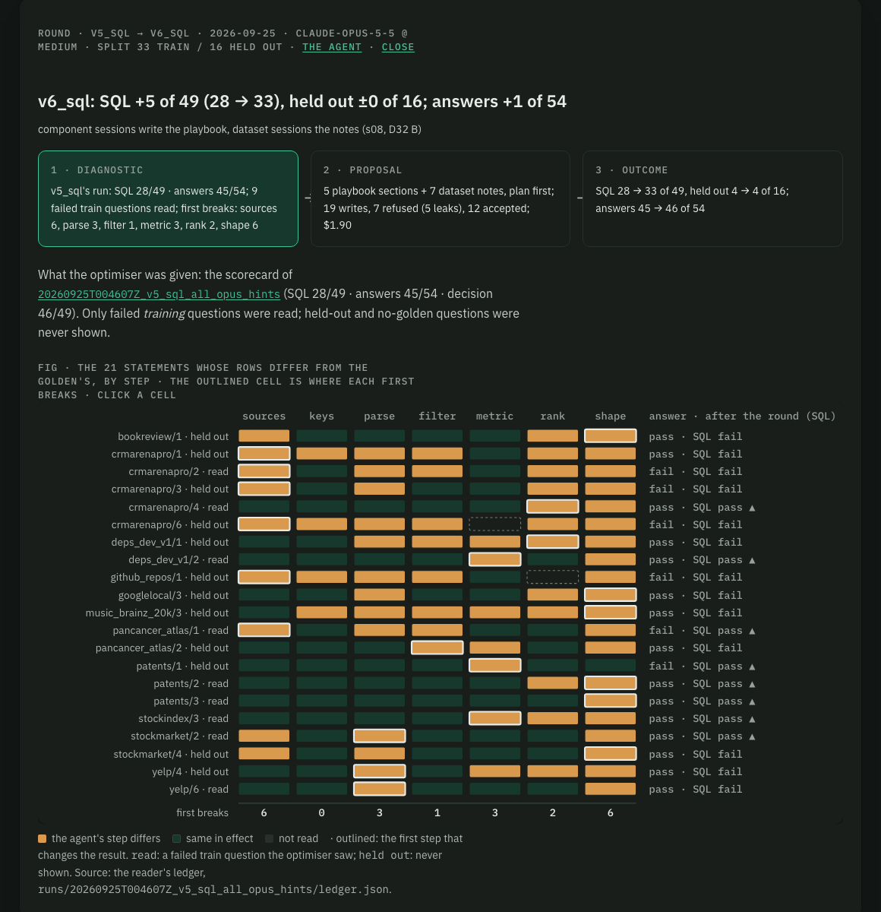

DataAgentBench · build receipt · 2026-09-25 · round 3 on request · after s09 · branch challenger_v3 · one trial per question · figures are screenshots of the explorer on :8091
Opus 5.5 did every model's job in this round: the reader diagnosed v5_sql's run (all 49 goldens re-read, 21 failed statements compared), the optimiser read the 9 failed training questions and rewrote five playbook sections and seven dataset notes, and v6_sql answered the 54 on Opus 5.5 at medium effort. The guard, the split (33 train / 16 held out) and the caps are unchanged from round 2.
01 · verdict · v5_sql → v6_sql, both Opus 5.5 · paired, exact McNemar
| version | model | answer | SQL | train SQL | held-out SQL | held-out answer | decision | run |
|---|---|---|---|---|---|---|---|---|
| v3_sql | haiku 4.5 | 32/54 | 19/49 | 17/33 | 2/16 | 9/16 | 42/45 | $5.20 · 22 min |
| v4_sql was champion | sonnet 5 | 41/54 | 27/49 | 21/33 | 6/16 | 10/16 | 43/49 | $6.59 · 16 min |
| v5_sql | opus 5.5 | 45/54 | 28/49 | 24/33 | 4/16 | 12/16 | 46/49 | $5.04 · 6 min |
| v6_sql champion | opus 5.5 | 46/54 | 33/49 | 29/33 | 4/16 | 14/16 | 49/49 | $5.12 · 7 min |
Paired against v4_sql (the champion it replaced): SQL 27 → 33 (10 won, 4 lost, p = 0.18); answers 41 → 46 (p = 0.18); held-out SQL 6 → 4 (0 won, 2 lost); held-out answers 10 → 14 (4 won, 0 lost, p = 0.125).
02 · train vs held out · data/splits (seed 20260924)
SQL 24 → 29 of 33. Of the 9 failed training statements the optimiser read, 7 pass now; crmarenapro/2 and yelp/6 still fail. Two that passed before now fail (crmarenapro/13, stockmarket/3), both at sources.
SQL 4 → 4 of 16: patents/1 now passes (it broke at metric, which got its first section), stockmarket/5 now fails at parse. Answers 12 → 14 of 16: crmarenapro/6 and patents/1.
With only 9 training failures left, each playbook section rests on one or two questions. Every note passed the guard (no question text, no gold value, no golden SQL copied), so this is not leakage; the risk is fitting. The held-out 16 are the test of that, and on SQL they show no gain yet. Three trials per question would tell a real 4/16 from noise.
03 · what moved · first break from the Opus reader's ledger
| question | split | SQL | answer | v5_sql → v6_sql |
|---|---|---|---|---|
| crmarenapro/4 | train | fail → pass | pass | breaks at rank → solved |
| deps_dev_v1/2 | train | fail → pass | pass | breaks at metric → solved |
| pancancer_atlas/1 | train | fail → pass | fail → pass | breaks at sources → solved |
| patents/2 | train | fail → pass | pass | breaks at shape → solved |
| patents/3 | train | fail → pass | pass | breaks at shape → solved |
| stockindex/3 | train | fail → pass | pass | breaks at metric → solved |
| stockmarket/2 | train | fail → pass | pass | breaks at parse → solved |
| patents/1 | held out | fail → pass | fail → pass | breaks at metric → solved |
| crmarenapro/6 | held out | fail | fail → pass | breaks at sources → breaks at parse |
| crmarenapro/13 | train | pass → fail | pass → fail | solved → breaks at sources |
| stockmarket/3 | train | pass → fail | pass | solved → breaks at sources |
| stockmarket/5 | held out | pass → fail | pass | solved → breaks at parse |
| crmarenapro/7 | train | no golden | pass → fail | no golden, answer only |
v6_sql's 16 remaining SQL fails break first at sources 5, parse 5, shape 4, filter 1 and rank 1; metric is at 0. Train (4): sources 2, parse 1, shape 1. Held out (12): parse 4, sources 3, shape 3, rank 1, filter 1. Opus submitted cleanly again: 0 of 54 trials with an unparsed submit_answer, median 5 turns.
04 · what the Opus optimiser wrote · agents/v6_sql/
| session | read | chars | refusals | cost |
|---|---|---|---|---|
| playbook · sources | pancancer_atlas/1, crmarenapro/2 | 571/600 | 0 | $0.15 |
| playbook · parse | stockmarket/2, yelp/6 | 587/600 | 2 (length) | $0.15 |
| playbook · metric new | deps_dev_v1/2, stockindex/3 | 573/600 | 0 | $0.11 |
| playbook · rank new | crmarenapro/4 | 498/600 | 0 | $0.07 |
| playbook · shape | patents/2, patents/3 | 575/600 | 1 (golden SQL) | $0.13 |
| keys, filter | no training failure broke there first | 589 · 598 | — | kept from round 2 |
| 7 dataset notes | crmarenapro, deps_dev_v1, pancancer_atlas, patents, stockindex, stockmarket, yelp | 1,546–1,925 /2,000 | 4 (1 golden SQL, 3 gold values) | $1.29 |
5 · metric (new)
- Use the simplest standard formula that fits the question's words. For "overall/total return since X" or "growth", compute last value ÷ first value within the window, per entity. Don't swap in a modelled strategy (dollar-cost averaging, compounding) unless the question spells out how it works. - When an entity has many rows (versions, records), decide which single row stands for it: row_number() over (partition by entity order by latest date desc, ordinal desc, text desc) = 1. Keep that row's attributes (such as its version). DISTINCT on the name alone loses them.
6 · rank (new)
- Use LIMIT only when the question asks for exactly the top N. If it asks whether one item stands out, beats the others, or is significantly higher, return every group ranked by the metric, with no LIMIT. The comparison is only visible when the other groups are shown too. - Break ties on the natural order of the grouping key: time periods by the period start date, entities by id. Don't break ties on a formatted label such as a month name, because that sorts alphabetically, not chronologically.
All 12 sessions were accepted; 7 refusals in 19 writes, 5 of them leaks the guard caught and the session rewrote. system.md is 7,598 of 8,000 characters. agent.yaml: opus, medium, plan on, challenger_of: v5_sql.
05 · the Optimise tab · /optimise/v6_sql
Optimise · round v5_sql → v6_sql

Round v5_sql → v6_sql · the component matrix

06 · receipt · model spend on the subscription, all Opus 5.5
| step | cost | what |
|---|---|---|
| reader on v5_sql's run | $3.13 | 49 goldens re-read by Opus (the Sonnet lines are not reused for another model), 21 comparisons |
| optimiser, round 3 → v6_sql | $1.90 | 5 component + 7 dataset sessions, 19 writes, 12 accepted |
| v6_sql eval | $5.12 | 54 × 1, 7 min, prompt version 9 |
| reader on v6_sql's run | $1.11 | goldens from the Opus cache, 16 comparisons |
07 · code changes for this round · uncommitted
dab diagnose RUN --ledger --model opus and dab optimise RUN --into V --model opus run that step on another model without changing agents/reader or agents/optimiser (both stay Sonnet by default). The optimiser's model is recorded in optimise.json, the reader's in ledger.json.tests/test_ledger.py). Rows are still one per golden, so the newest reader's lines are what the table holds; each run's ledger.json keeps its own copy.measured_against: v6_sql's parent is challenger_of: v5_sql, not v5's model-switch lineage.08 · open items · nothing committed on challenger_v3
.lavish/ s08–s10 go with it.